Training & user guide for administrators, landlords, property managers, tenants and service partners
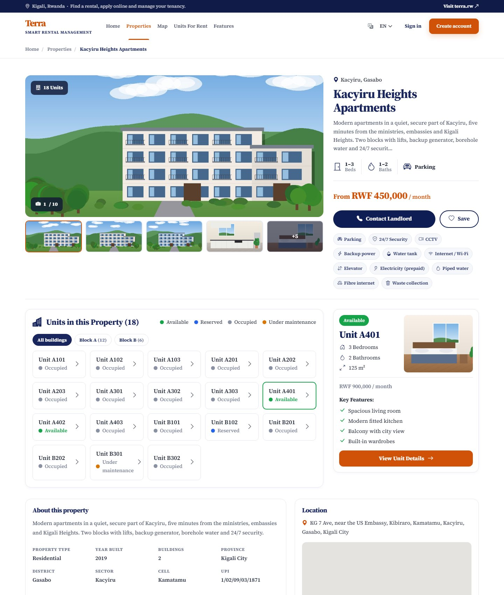
Version 1.0 · November 2026
Covers the web platform and the screens used in day-to-day operations
Screens shown use the Rwandan demo dataset (fictitious people and properties)
Contents
1Getting started
2The rental lifecycle at a glance
3Terra administrators
4Landlords & property managers
5Leases from application to activation
6Rent, payments, receipts & ledger
7Maintenance & service providers
8Move-in & move-out inspections
9Communication & notifications
10Tenants
11Accountants, agents & technicians
12Reports, maps & documents
13Security, privacy & good practice
14Hands-on training exercises
15Quick reference & troubleshooting
AAppendix: preparing a demo environment
About this guide
Terra brings the whole rental relationship into one place: listing a property, choosing a tenant, signing the lease, collecting rent, fixing problems, renewing and finally moving out. This guide explains each part of the platform from the point of view of the person who uses it, with real screens from the system.
Use it in three ways:
As a training course — read sections 1–2, then the section for your role, then complete the exercises in section 14 with the demo accounts.
As a reference — section 15 lists every status, alert and common question.
For demonstrations — the demo accounts are prepared so every workflow has something to show.
About the screenshotsAll names, phone numbers, ID numbers, properties and amounts in this guide come from the demo dataset. They are realistic for Rwanda but fictitious. Property photos are illustrations marked “Demo image”.
1
Getting started
Everyone uses the same web address. What you see after signing in depends on your role.
Who uses Terra
Role
What they do in Terra
Terra administrator
Runs the platform: users and roles, all properties, verification of service providers, audit log, platform monitoring.
Property owner (landlord)
Sees and manages their own properties, tenants, leases, rent, expenses, maintenance and reports.
Property manager
Manages properties assigned by Terra on behalf of owners — the main day-to-day operator.
Tenant
Applies for homes, accepts the lease, pays rent, reports problems, talks to the manager, keeps receipts.
Accountant / finance officer
Read-only access to rent ledgers, payments, expenses, receipts and financial reports for assigned properties.
Real estate agent
Markets assigned properties, follows applications, sees commissions earned.
Service provider / technician
Receives maintenance jobs, schedules visits, records the work and the cost.
Signing in
Open the Terra web address and choose Sign in (top right).
Enter your email and password. New owners, managers and tenants created by staff receive their sign-in details by email; change the password after the first sign-in.
If two-step sign-in is on for your account, Terra emails you a 6-digit code — enter it to finish signing in (see section 13).
You land on your own dashboard. The left menu shows only what your role can use.
Finding your way around
Left menu
Grouped by task (e.g. Tenancy, Rent & Reporting, Communication & Care, Tools). The current page is highlighted in orange.
Top bar
Quick search (Ctrl K) to jump to any page, the language switch (EN / RW / FR), the messages icon and the bell for alerts, and Quick actions.
Language
Choose English, Kinyarwanda or French from the top bar or Security & Language. Your choice is remembered on every device.
Phones & tablets
Pages adapt to phone screens. The menu folds behind the ☰ button.
Demo accounts
On a demo or training server, sign in with these accounts. The password for all of them is Terra@Demo2026.
Account
Role
What it is set up to show
admin@terra-demo.test
Administrator
Platform monitor, audit log, users, all properties
Kimihurura & Remera Plaza — a lease ready to activate
manager.bosco@terra-demo.test
Property manager
Kicukiro, Musanze & Rubavu — completed move-out with deposit settlement
owner@terra-demo.test
Owner
Kayitesi Diane — Kimihurura & Rubavu portfolio
tenant.aline@terra-demo.test
Tenant
Overdue invoice to pay, a repair to confirm, messages
tenant.kevin@terra-demo.test
Tenant
A lease waiting for his acceptance
tenant.brian@terra-demo.test
Tenant
A move-in inspection to confirm
accountant@terra-demo.test
Accountant
Finance workspace and reports
agent@terra-demo.test
Agent
Assigned properties and commissions
technician@terra-demo.test
Technician
Kigali Plumbing Services — assigned jobs
Demo onlyNever load the demo dataset on the live platform. Demo accounts use the reserved .test domain and cannot receive email.
2
The rental lifecycle at a glance
Terra follows a rental from the first listing to the final deposit refund. Each step happens in the platform, and each hand-over between people triggers an alert.
Public Properties page, property page with unit grid, Map
Application
Tenant → manager
Unit page → Apply; manager reviews under Applications
Lease & contract
Manager → tenant
Lease page → Lease workflow, Generate contract; tenant accepts under My Lease
Deposit, rent, receipts
Tenant, manager, accountant
Invoices → Pay now; Rent ledger; receipts
Move-in / move-out
Manager, tenant
Inspections
Maintenance
Tenant → manager → technician
Maintenance Requests, Service Providers, technician My jobs
Renewal / notice
Tenant ↔ manager
Lease page → Tenancy panel
Terra does not hold tenants’ moneyOnline payments go from the tenant’s Mobile Money straight to the landlord’s or manager’s own merchant account. Terra records the confirmed payment, issues the receipt and updates the ledger.
3
Terra administrators
Administrators keep the platform healthy and trustworthy. Start each day on the dashboard.
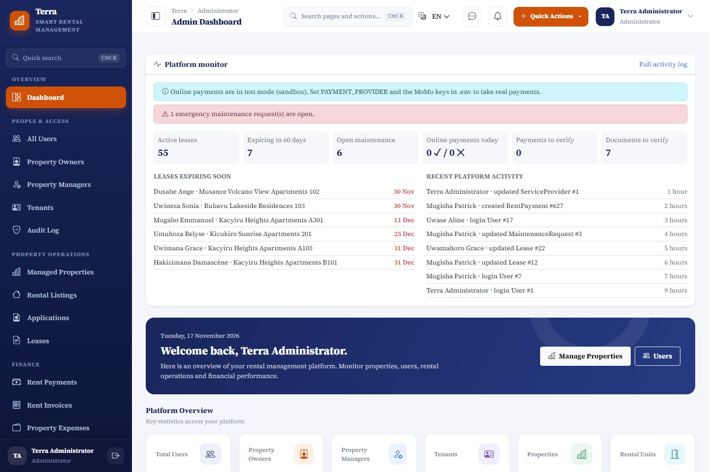
Admin dashboard: the Platform monitor shows alerts, active and expiring leases, open maintenance, today’s online payments and items waiting for verification.
Reading the platform monitor
Red alerts need action today — for example an emergency maintenance request, or emails stuck in the queue (ask IT to check the queue worker).
Blue notes are information, such as “payments are in test mode” on a training server.
Each tile opens the matching list: leases expiring in 60 days, payments and documents waiting for verification.
Everyday administration
Users & roles
All Users: create accounts and set the role (manager, tenant, accountant, agent, technician). Owners and managers have their own pages with extra details.
Assigning work
Assign managers on the property form. Assign accountants and agents under Tools → Agents & Accountants.
Verification
Verify service providers (Service Providers → Verify) and check tenant ID documents (Documents → Verify / Reject).
Audit log
People & Access → Audit Log records every change, sign-in and failed sign-in, with who, when and from where.
A property as everyone sees it
Each property has one profile page. The public sees it on the Terra website; administrators and managers see the same layout at the top of the property page, with editing tools underneath.
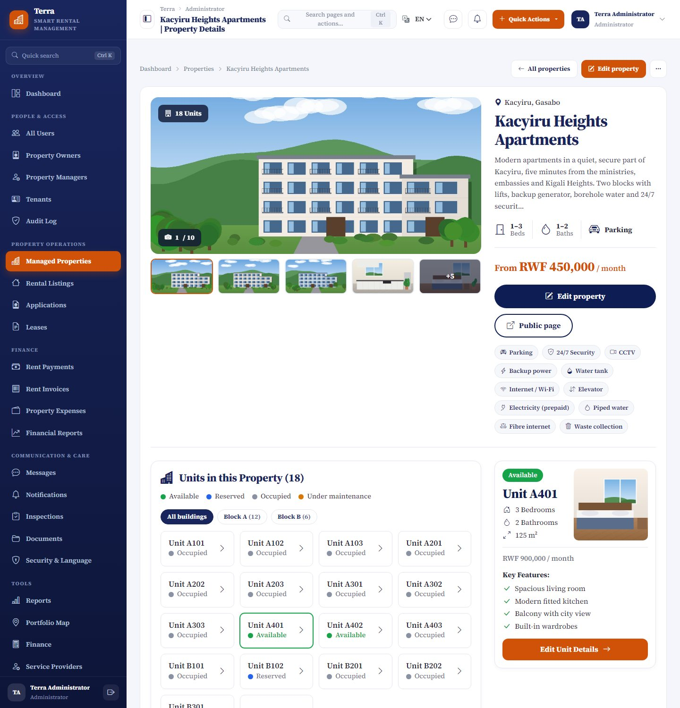
Property page for staff: photo gallery, summary, “From RWF … / month”, the unit grid coloured by status, and the selected unit’s card. Below are buildings, floors, units and documents.
Click any unit tile to see its details on the right. Green = available, grey = occupied, blue = reserved, amber = under maintenance.
Edit property opens the form: name, location (province → village, GPS coordinates), UPI, amenities, utilities, photos.
Public page shows exactly what prospective tenants see.
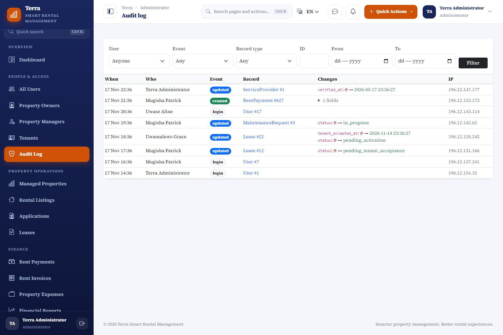
Audit log: filter by person, event, record type or date. Updates show the old value crossed out and the new value in green.
4
Landlords & property managers
Owners and managers use the same workspace. Owners see the properties they own; managers see the properties Terra assigned to them.
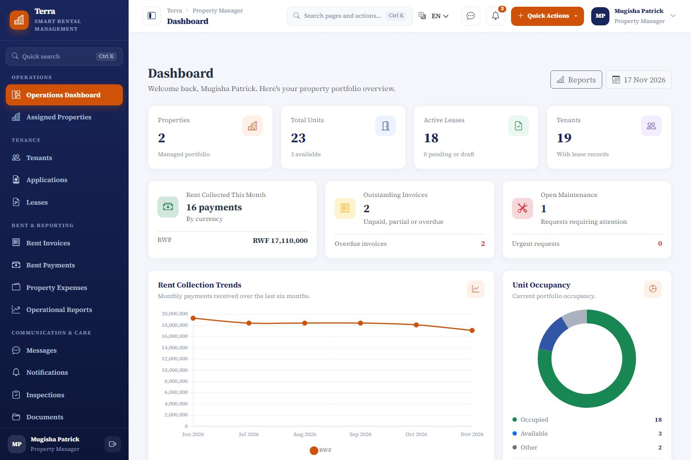
Operations dashboard: occupancy, rent collected, outstanding balances and what needs attention.
A typical day
Check the bell and messages — new applications, maintenance requests, accepted leases, renewal requests.
Handle maintenance: assign new requests to a service provider (section 7).
Review applications and move leases forward (section 5).
Look at outstanding rent (Reports → Outstanding rent) and contact tenants in arrears. Terra already sends automatic reminders.
Record expenses (security, cleaning, REG electricity, WASAC water, repairs) so reports show true net income.
Registering a property
Owners use My Properties → New property; administrators use Managed Properties → New property. Managers work on the properties assigned to them. Enter the name, type, location down to cell and village, and GPS coordinates (these place it on the map).
Add the UPI, amenities (parking, security, backup power…) and utilities. Upload clear photos — the first is the cover.
On the property page add buildings, floors and units. For each unit: number, type, bedrooms, bathrooms, size, rent, deposit, meters, inventory, key features (one per line) and photos.
When the property is active, units marked Available appear on the public website straight away.
Tip — key features sell unitsShort lines such as “Balcony with city view” or “Borehole water backup” appear on the public unit card. Three or four is ideal.
5
Leases from application to activation
Every lease follows the same five stages. The Lease workflow panel on the lease page always shows the next step.
Created when an application is approved. Terms can be edited. The tenant cannot see it yet.
Manager: check terms, generate the contract, Send to tenant
Awaiting tenant acceptance
Terms are locked, the unit is reserved and the tenant is notified. Recall returns it to draft if something must change.
Tenant: review and accept in My Lease
Awaiting activation
The tenant has accepted. Generate the deposit and first-rent invoices; the tenant pays; record move-in.
Manager & tenant
Active
Activated once both invoices are paid, move-in is confirmed and the start date has arrived. The unit becomes occupied.
Monthly rent runs automatically
Terminated / expired
Ended early (with reason) or reached its end date.
Manager; then move-out inspection
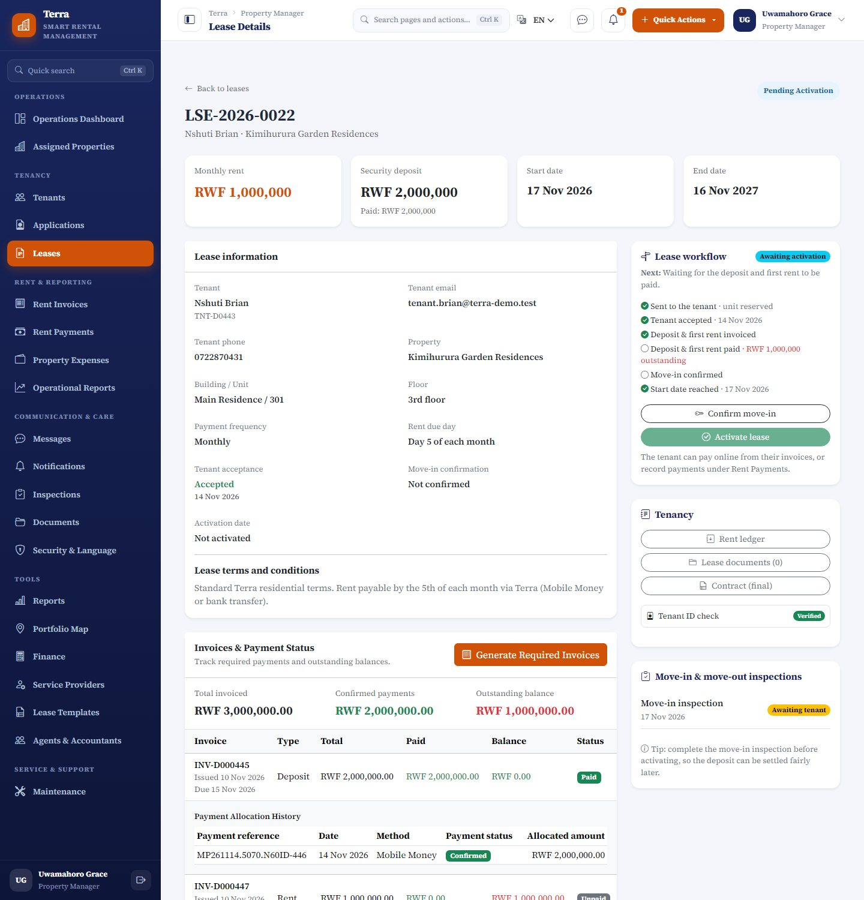
A lease awaiting activation. The Lease workflow panel (right) ticks off each requirement and says what to do next; Activate is enabled only when everything is ready.
Generating the lease contract
On the lease page, open Tenancy → Generate contract.
Choose a template (the default is the Standard residential lease), the notice period and any special conditions.
Terra fills in names, ID number, unit, rent, deposit and dates. Edit, add or remove clauses while it is a draft.
Save & finalise. The tenant can now read it from their lease page and accept it. Print it for signatures if a paper copy is needed and store the signed scan under Documents.
Legal reviewHave Terra’s legal adviser review templates against current Rwandan law before using them with real tenants. Managers can create templates for their own properties under Tools → Lease Templates.
Renewals and move-out notices
Renewal
The tenant asks to renew (6, 12, 24 or 36 months) — or the manager offers first. The manager sends the new end date and rent; when the tenant accepts, the lease is extended automatically.
Move-out notice
The tenant gives a move-out date from their lease page. The manager acknowledges it and plans the move-out inspection (section 8).
Terra reminds both sides 60, 30 and 7 days before a lease ends.
Reviewing applications
Applications lists new requests. Open one to see the applicant, move-in date, occupants, offered rent and employment.
Check the tenant’s ID documents (Documents, filtered to the tenant) before approving.
Approve creates a draft lease and reserves the unit; Reject records the reason and tells the applicant.
6
Rent, payments, receipts & ledger
Invoices are created every month automatically. Tenants pay online with Mobile Money or by bank; managers can also record payments received another way.
How a tenant pays online
The tenant opens the invoice and taps Pay now.
They confirm the amount (part-payments are allowed) and their Mobile Money number.
A prompt appears on their phone; they approve it with their PIN.
Terra records the payment, applies it to the invoice, emails the receipt and alerts the manager.
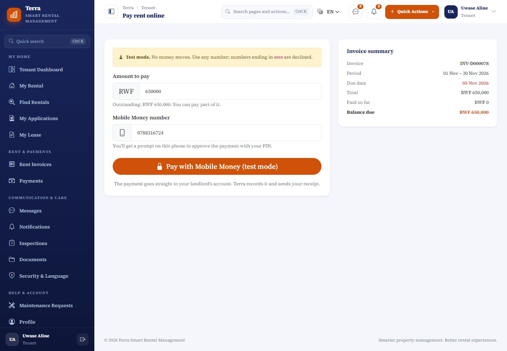
Paying an invoice online. On training servers the yellow “Test mode” note appears and no money moves.
Recording a payment received offline
Rent Payments → Record payment: choose the lease, amount, method (cash, bank transfer, Mobile Money), reference and date. It starts as pending; Confirm it once the money is verified, then Allocate it to the invoice(s).
ReceiptsEvery confirmed payment has a receipt that can be printed, saved as PDF, or shared by link (for example on WhatsApp). The link works for 30 days.
The rent ledger
Each lease has a ledger that both the tenant and the landlord can see: every invoice is a debit, every confirmed payment a credit, with the running balance. Export it to Excel or print it as PDF.
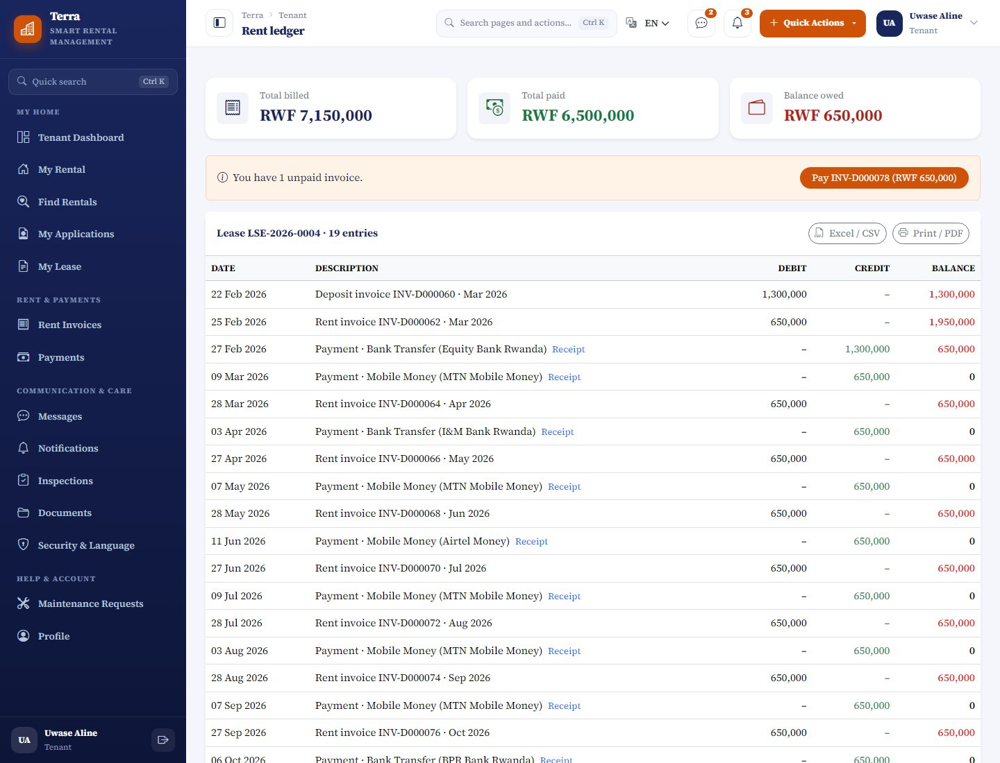
Rent ledger for a tenant: totals at the top, a “Pay” shortcut for unpaid invoices, and receipt links on each payment.
Automatic reminders
When
Tenant receives
Owner & managers receive
New invoice issued
Invoice amount and due date
—
3 days before due
“Rent due in 3 days”
—
Due date
“Rent is due today”
—
1, 3, 7, 14, 30 days late
“Rent overdue”
Overdue alert on day 1 and day 7
Payment confirmed
“Payment successful” + receipt
“Rent received”
7
Maintenance & service providers
Submitted→Assigned→Scheduled / In progress→Resolved→ tenant confirms →Closed
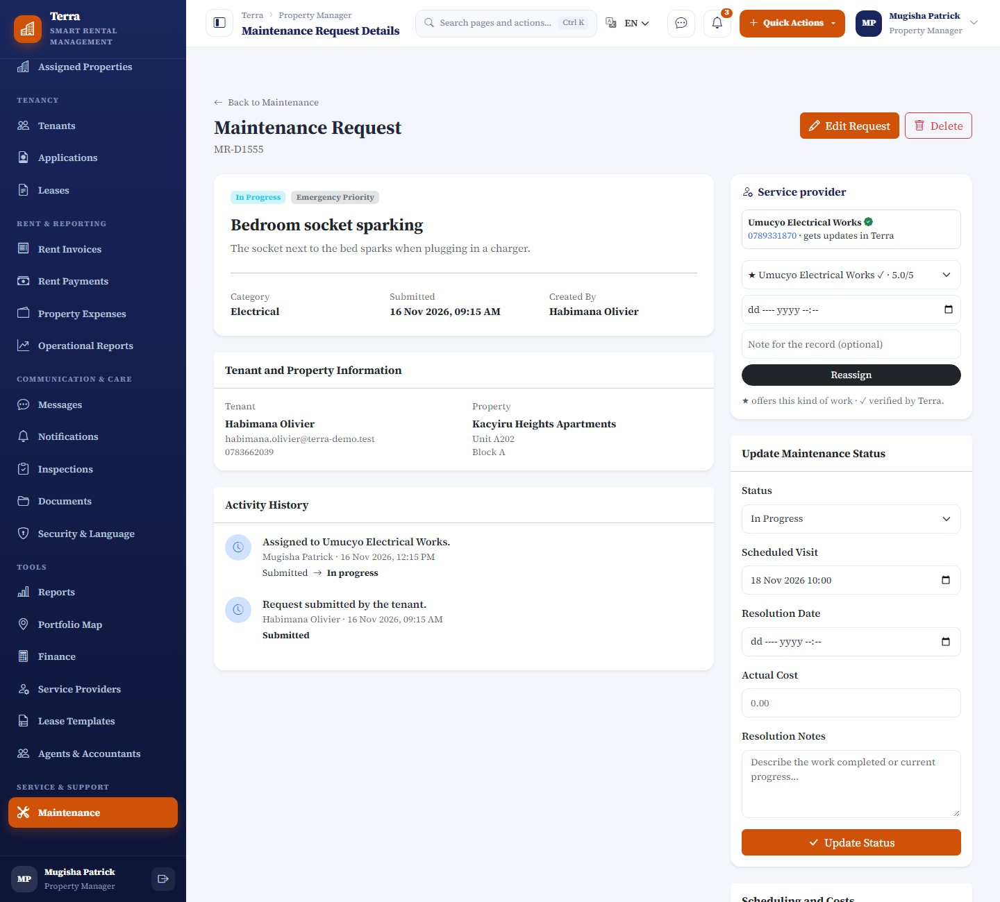
A maintenance request seen by the manager. The Service provider panel lists providers; ★ marks those offering this type of work, ✓ those verified by Terra.
The tenant reports the problem with a description, priority and photo. The manager is alerted (red for emergencies).
The manager assigns a service provider, optionally with a visit time. The technician and tenant are both told, including the technician’s phone number.
The technician updates the job (scheduled, in progress, on hold, resolved) and records what was done and the cost.
The tenant confirms the repair and rates it 1–5 — or reopens it if the problem remains.
Build your networkTools → Service Providers: add plumbers, electricians, cleaners and others with their categories. Tick “Give them a technician login” so they can receive and update jobs themselves.
8
Move-in & move-out inspections
A careful move-in record protects both sides and makes the deposit refund quick and fair.
Move-in
From the lease page choose Start move-in inspection. Terra builds a room-by-room checklist from the unit (bedrooms, bathrooms) and its inventory.
Walk through the unit on a phone. Rate each item (Excellent → Missing), add notes, take photos with the camera, record meter readings and keys.
Save & send to tenant. The tenant confirms the report — or disagrees and says why, and the manager updates and resends it.
Tenants without a Terra login sign the printed report; the manager records “confirmed in person”.
Move-out and deposit settlement
The move-out inspection uses the same checklist and shows each item side by side with its move-in condition. Add a deduction next to any item that is worse; Terra calculates the refund. Once the tenant confirms, record the refund with its Mobile Money or bank reference.
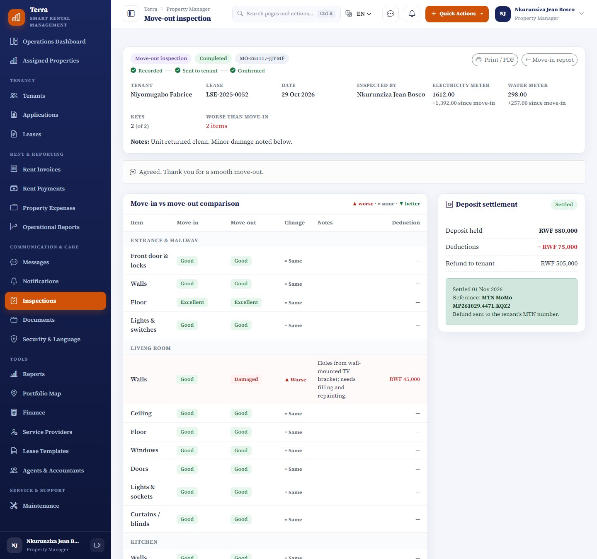
A completed move-out: two items worse than at move-in, RWF 75,000 deducted, RWF 505,000 refunded with the MTN MoMo reference.
9
Communication & notifications
Messages replace scattered WhatsApp threads: every conversation is kept with the property and unit it concerns.
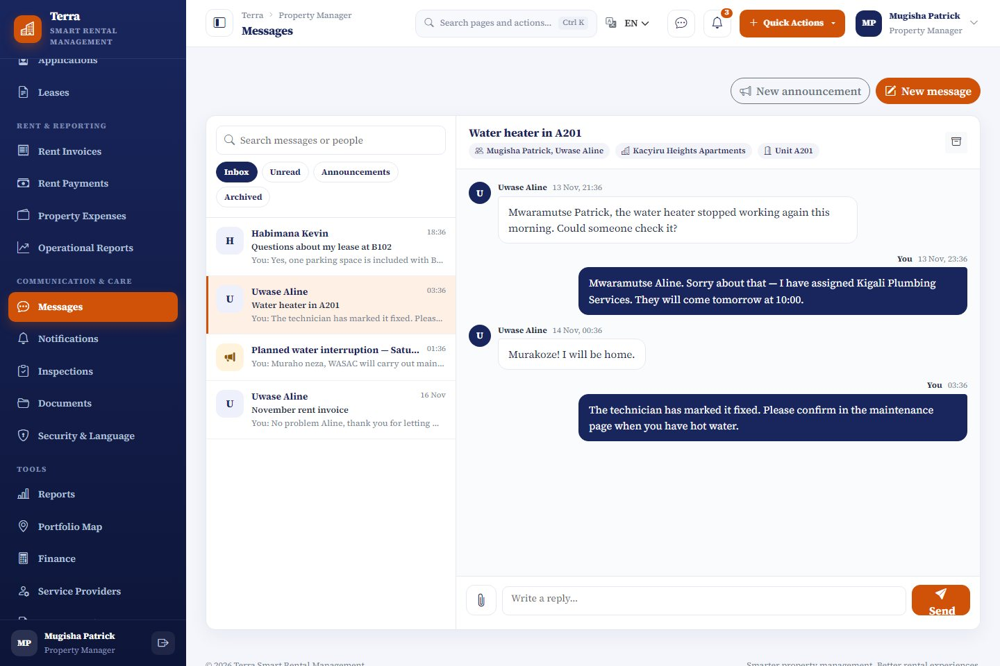
Messages: the inbox on the left, the conversation on the right, linked to Kacyiru Heights, Unit A201.
Direct messages
New message: choose the person (tenants can only reach their own landlord, managers and Terra support), a subject, and attach photos or documents.
Announcements
New announcement: choose a property and every current tenant receives it — water cuts, security notices, drills. Tenants can read but not reply.
Notifications
The bell shows unread alerts; Notifications lists them all with filters (rent, payments, leases & inspections, maintenance, applications, documents, messages). Alerts are also emailed unless the person turns email off. SMS is ready to switch on once Terra signs a gateway contract.
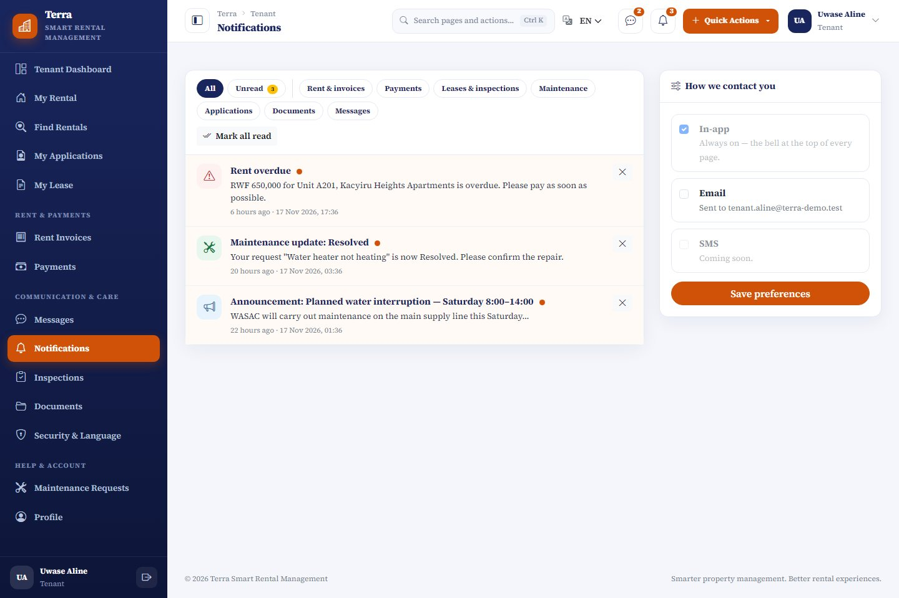
A tenant’s notification centre, with the email preference on the right.
10
Tenants
Tenants manage their whole tenancy from a phone: lease, rent, receipts, repairs and messages.
Finding a home
The public website lists properties with photos, prices and available units, and a map of Rwanda for searching by location.
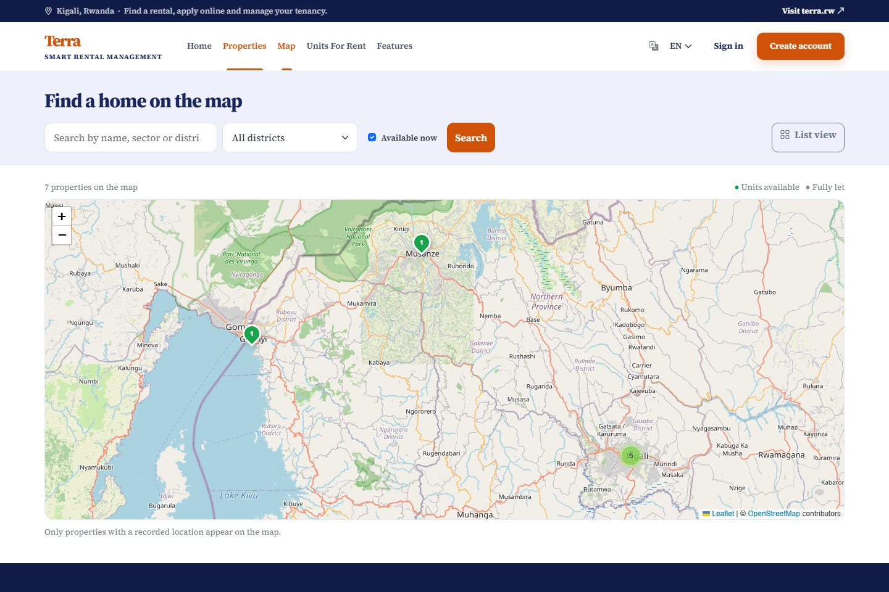
Map of rentals: green pins have units available. Click a pin for the photo, starting rent and a link to the property.
Applying and accepting the lease
Open a unit and choose Apply. Create an account or sign in, then fill in contact, tenancy and offer details.
Add your ID under Documents → Identity verification. Landlords need a verified ID before signing.
When the lease is ready you get an alert. Open My Lease, read the terms (and the contract), tick the box and Accept.
Pay the deposit and first month’s rent from your invoices. The manager confirms your move-in and the lease becomes active.
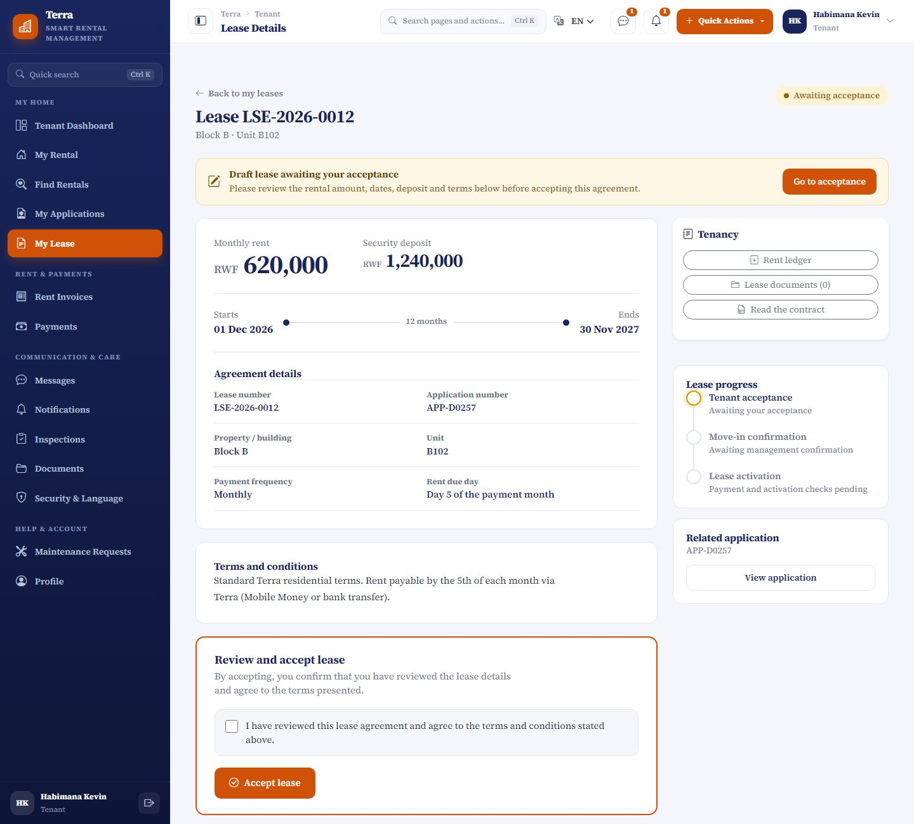
A lease waiting for the tenant’s acceptance.
Living in the home
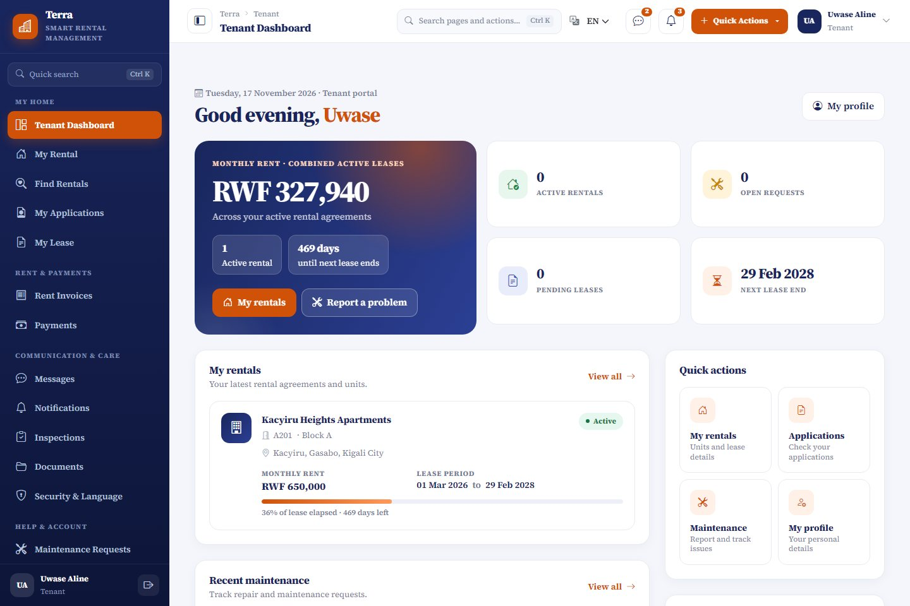
Tenant dashboard: current home, balance, next payment and recent requests.
Pay rent
Rent Invoices → open the invoice → Pay now. Receipts are kept under Payments.
Report a problem
Maintenance Requests → New: describe it, set the priority, add a photo. Follow progress and confirm the repair at the end.
Renew or give notice
On your lease page, use Request lease renewal or Give move-out notice.
Talk to the manager
Messages → New message. Announcements about your building also arrive here.
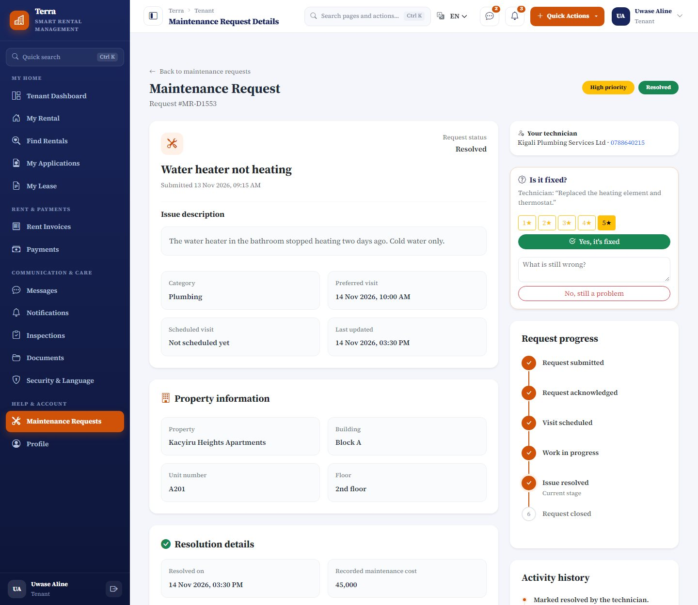
When a repair is marked resolved, the tenant confirms it and gives a rating — or reports that it is still a problem.
11
Accountants, agents & technicians
Accountant / finance officer
The Finance workspace shows this month’s billed and collected rent, collection rate, outstanding and overdue amounts, expenses and net income for the properties assigned to the accountant, plus lists of payments, invoices and expenses with receipts and ledgers. Access is read-only.
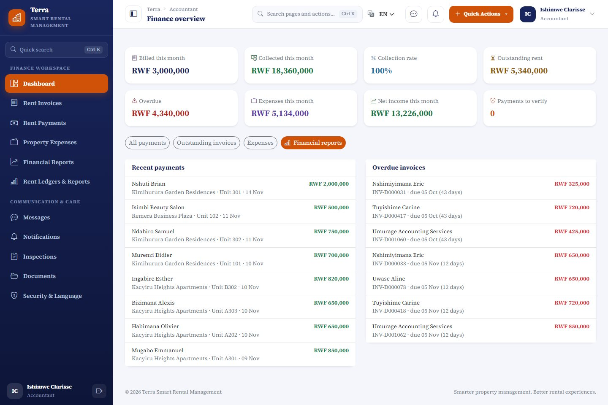
Finance overview for an accountant.
Real estate agent
Agents see their assigned properties with available units and share links (copy or WhatsApp), the applications for those properties, and their commissions. Managers record commissions — by default the agent’s rate times one month’s rent — and mark them paid with a reference.
Service provider / technician
My jobs lists assigned work, most urgent first, with the address, map link and tenant phone number. Open a job to set a visit time, mark it in progress or on hold, and finish with what was done and the cost.
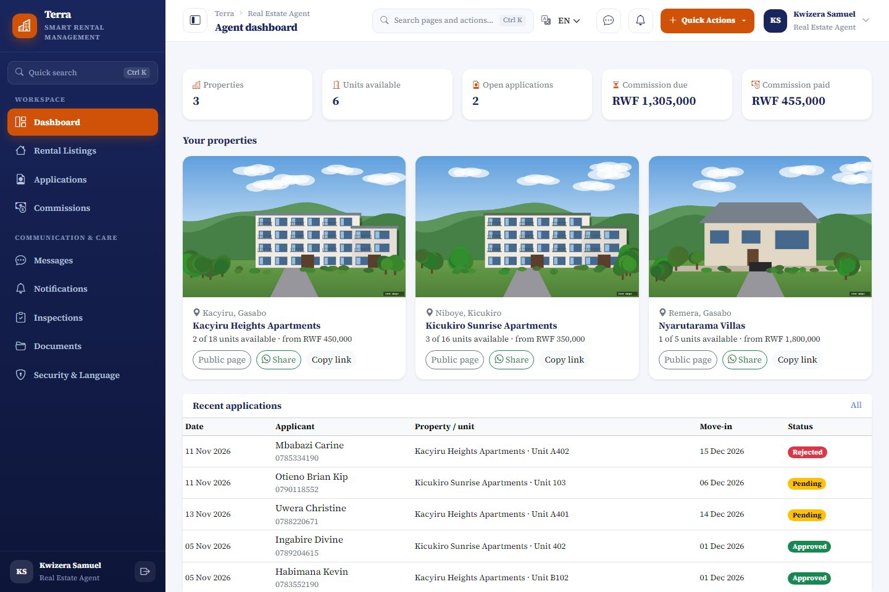
Agent dashboard.
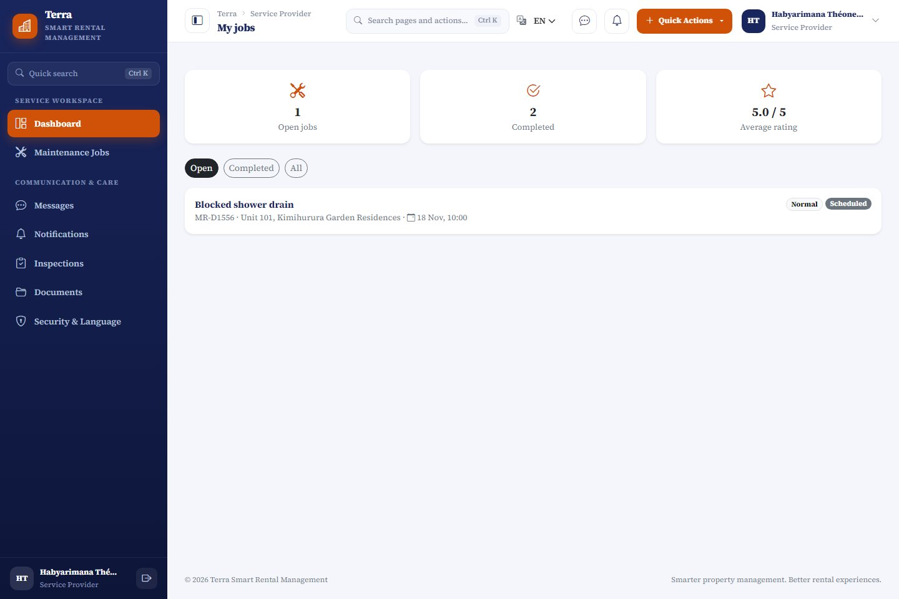
Technician job list.
12
Reports, maps & documents
Reports
Tools → Reports has twelve reports in four groups. Choose a property and dates, then export to Excel or PDF.
Group
Reports
Property
Occupancy & vacancy · Tenant list · Property performance
Financial
Rent collection by month · Outstanding rent · Income, expenses & net income
Open & completed requests · Costs by property · Technician performance
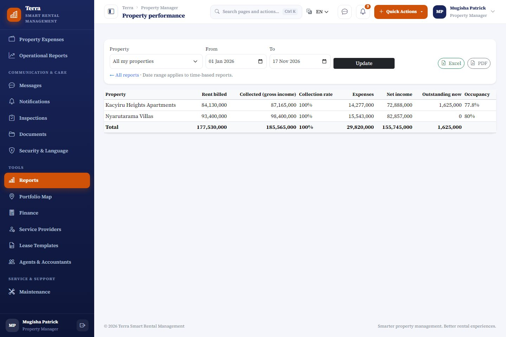
Property performance report: billed, collected, collection rate, expenses, net income and occupancy per property.
Portfolio map
Tools → Portfolio Map shows your properties coloured by occupancy. Add GPS coordinates on the property form for properties that are missing.
Documents
Title deeds, signed contracts, insurance and tenant IDs are stored privately. Only people connected to that property, lease or tenant can open them.
13
Security, privacy & good practice
Two-step sign-in
Security & Language → Two-step sign-in → Turn on. After the password, a 6-digit code is emailed. Required practice for administrators, owners, managers and accountants.
Only what you need
Every person sees only the properties, tenants and documents connected to them. Tenants never see other tenants’ information.
Personal data
ID numbers, phone numbers and documents are personal data under Rwanda’s data protection law. Don’t download or share them outside Terra without a reason.
Audit trail
Changes are recorded with the person and time. Don’t share accounts — everyone needs their own login.
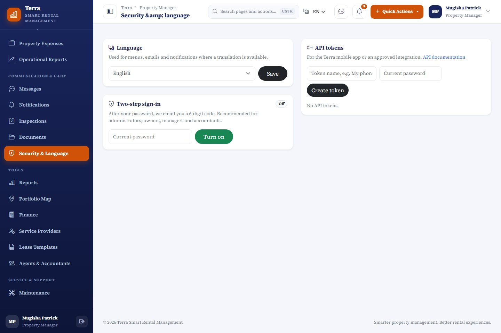
Security & Language: language, two-step sign-in and API tokens for the mobile app.
Good-practice checklist
Verify a tenant’s ID and run the move-in inspection before activating a lease.
Confirm offline payments only after checking the money has arrived.
Record expenses every month so net income in reports is accurate.
Use messages and announcements instead of private WhatsApp groups, so there is a shared history.
Sign out on shared computers.
14
Hands-on training exercises
Use the demo accounts (password Terra@Demo2026). Do them in order — some continue from the one before. Each takes 5–10 minutes.
Exercise 1 — Explore the portfolio
Account: manager@terra-demo.test
Open Assigned Properties → Kacyiru Heights Apartments. Click three unit tiles and compare their cards.
Open Tools → Portfolio Map and find Nyarutarama Villas.
Open Reports → Income, expenses & net income and export it to Excel.
Expected: you can say how many units are free at Kacyiru Heights and what the portfolio earned this year.
Exercise 2 — Pay rent and check the ledger
Account: tenant.aline@terra-demo.test
Open the bell — there is an overdue rent alert. Open the invoice and choose Pay now.
Keep the amount, confirm the phone number, choose Pay, then press Approve in the test-mode box.
Open the receipt, then the Rent ledger.
Expected: the invoice shows Paid, the ledger balance falls to zero and a receipt is available.
Exercise 3 — Confirm a repair
Account: tenant.aline@terra-demo.test
Open Maintenance Requests → Water heater not heating.
In “Is it fixed?” give a rating and choose Yes, it’s fixed.
Expected: the request is Closed and the manager receives “Repair confirmed by tenant”.
Exercise 4 — Assign an emergency job
Account: manager@terra-demo.test, then technician@terra-demo.test
Open the emergency request Bedroom socket sparking and reassign it to Kigali Plumbing Services (for practice) with a visit time.
Sign in as the technician, open the job, set it to Resolved with a note and cost.
Expected: the tenant is told the job is resolved and is asked to confirm.
Exercise 5 — Accept a lease
Account: tenant.kevin@terra-demo.test, then manager@terra-demo.test
As Kevin, open My Lease, read the contract, tick the box and Accept.
As the manager, open the lease: the workflow now says to generate the first invoices.
Expected: the lease moves to “Awaiting activation”; the manager receives “Lease accepted by tenant”.
Exercise 6 — Activate a lease
Account: manager.grace@terra-demo.test
Open Leases → the lease for Unit 301, Kimihurura (Awaiting activation). The deposit is paid; first rent is not.
Record a payment for the first-rent invoice (Rent Payments → Record payment), confirm it and allocate it.
Back on the lease: Confirm move-in, then Activate lease.
Expected: the lease is Active and Unit 301 shows as occupied on the property page.
Exercise 7 — Renew a lease
Account: manager@terra-demo.test
Open the lease for Unit A301 (Kacyiru Heights). In the Tenancy panel there is a renewal request for 12 months.
Send an offer with a new end date and rent.
Expected: the request changes to “Offer sent” and the tenant is notified.
Exercise 8 — Move-out review
Account: manager.bosco@terra-demo.test
Open Inspections → the completed move-out at Musanze Volcano View 201.
Find the two items worse than at move-in and check the refund. Use Print / PDF.
Expected: you can explain the RWF 75,000 deduction to the tenant from the evidence.
Exercise 9 — Send an announcement
Account: manager.grace@terra-demo.test
Messages → New announcement: choose Remera Business Plaza and announce a short power interruption.
Sign in as any Remera tenant (see Tenants) — or check the conversation’s recipient count.
Expected: every current tenant of the plaza receives the announcement and cannot reply to it.
Exercise 10 — Administrator checks
Account: admin@terra-demo.test
Read the Platform monitor alerts. Open Audit Log and filter by Lease.
Verify a pending tenant document under Documents.
Turn on two-step sign-in for your account under Security & Language.
Expected: you can say who changed a lease and when, and the document shows Verified.
15
Quick reference & troubleshooting
Unit statuses
Status
Meaning
Available
Free and listed publicly
Reserved
Held for a lease being signed
Occupied
Active lease
Under maintenance
Not rentable for now
Vacant / Inactive
Empty but not listed / retired
Invoice statuses
Status
Meaning
Unpaid
Issued, not yet due
Overdue
Past due with a balance
Partially paid
Part received
Paid
Fully settled
Maintenance statuses
Status
Meaning
Submitted / Open
Waiting for the manager
Scheduled
Visit booked
In progress / On hold
Being worked on / paused
Resolved
Fixed — waiting for tenant
Closed / Rejected
Confirmed fixed / declined
Inspection statuses
Status
Meaning
Draft
Being recorded
Awaiting tenant
Sent for confirmation
Disputed
Tenant disagreed — update & resend
Completed
Confirmed by the tenant
Common questions
Problem
What to do
“Activate lease” is greyed out
Look at the Lease workflow checklist: invoices must be generated and paid, move-in confirmed, and the start date reached.
The tenant cannot see the lease
It is still a draft. Press Send to tenant.
I need to change terms after sending
Use Recall to draft (only before the tenant accepts), edit, then send again.
A payment shows “pending”
Offline payments need Confirm after you check the money arrived, then Allocate.
Online payment “not completed”
The tenant declined or did not approve in time. No money was taken — they can try again.
Nobody is receiving emails
Ask IT to check the background queue worker (the admin monitor warns when emails are stuck).
A property is missing from the map
Add latitude and longitude on the property form.
I forgot my password
Use Forgot password on the sign-in page.
A
Appendix: preparing a demo environment
For IT staff preparing a training or review server. Never run these steps on the live platform.
Create a separate demo database and point the demo server’s .env at it. Keep PAYMENT_PROVIDER=sandbox.
Run php artisan migrate, then php artisan storage:link.
Load the demo data: php artisan db:seed --class=TerraDemoSeeder. It prints the demo accounts when finished (about 20 seconds).
To reset after a training session: php artisan migrate:fresh and seed again.
What the demo dataset contains
Item
Details
Properties
7 properties, 68 units: Kacyiru Heights, Kimihurura Garden Residences, Nyarutarama Villas, Kicukiro Sunrise, Remera Business Plaza (shops & offices), Musanze Volcano View, Rubavu Lakeside
People
Administrator, 5 owners (individuals and companies), 3 managers, accountant, agent, 6 service providers (3 with technician logins), about 60 tenants including 7 businesses
Tenancies
55 active leases, one at each other stage (draft, awaiting tenant, awaiting activation, terminated), 7 ending within 60 days
Money
Up to 18 months of invoices and payments (MTN MoMo, Airtel Money, Bank of Kigali, Equity, I&M, BPR, cash), some arrears, 6 months of expenses
Operations
Maintenance requests at every stage, inspections including a settled move-out, contracts, renewal requests, a move-out notice, messages, announcements, notifications, documents, agent commissions
Safety built inThe seeder refuses to run in production unless ALLOW_DEMO_SEED=true is set, refuses to run twice, and sends no emails, SMS or notifications while loading.